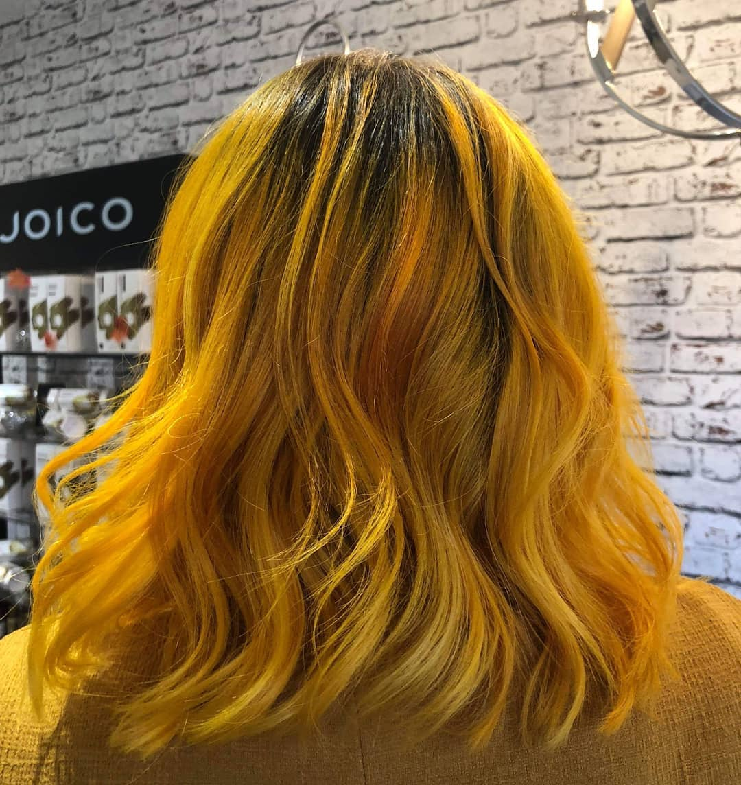
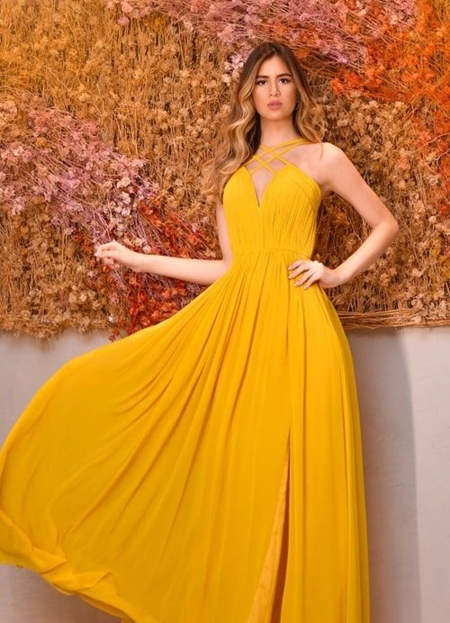

O tom mostarda pode ser considerado como
uma cor alegre, revigorante, quente, dinâmica e energizante.
A diferença dele para o amarelo aberto e brilhante está na
intensidade.
O amarelo mostarda é mais suave e discreto. Ele ilumina,
mas sem cansar a visão.

